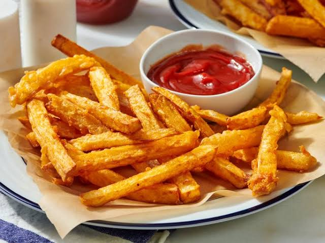

Home
Lasagna

Description
Golden, crispy on the outside, and fluffy on the inside, these classic homemade French fries are perfectly seasoned and fried to perfection.
Ingredients
Steps
- Cut Fries. First, we have to cut our fries. A neat little crispy fries trick you may not have seen before: use a serrated knife to cut the potatoes. Though not visible to the eye, it makes the surface rougher therefore creating more surface area to crisp up = crispier fries!
- Rinse with Water
- Cook in vinegar water. Once the potatoes are rinsed, place them in a pot with cold tap water, vinegar and salt. Bring to a boil on high heat then immediately turn down to low so the surface is barely rippling. Cook for 10 minutes.
- Drain and dry
- Deep fry in hot oil until golden brown.